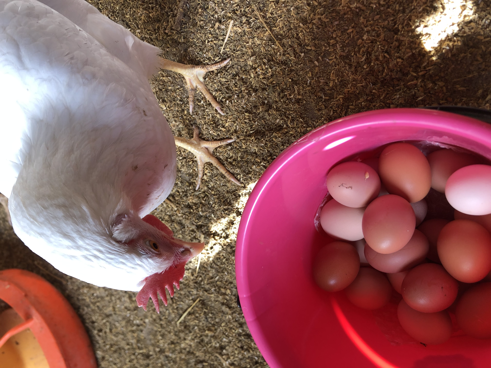
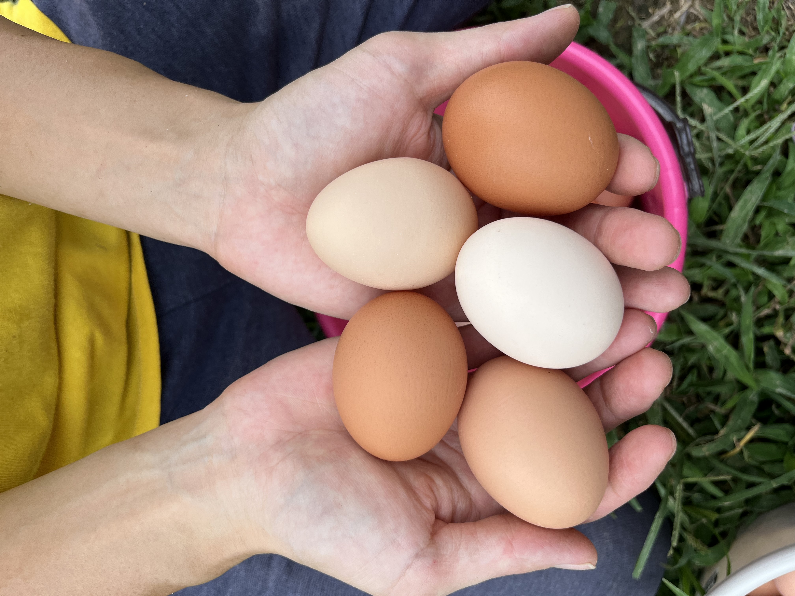

たまごについて
- もみじ（赤玉）
- さくら（薄ピンクや白）
- アローカナ（青や緑）
の3種の鶏を飼育しており、3色のたまごをランダムにパックに詰めて販売しています。
たまごの見た目はよく見ればひとつひとつの形や色合い、手触りなどが違い、見ていて飽きません。
また黄身の色も個体によって違います。緑餌を多く食べていれば黄身が濃い黄色になりますが、鶏とわたしのたまごの多くは市販のたまごよりは黄身の色は薄くなります。
殻の色の違いで味が違うかはわかりませんが、どの色のたまごも市販のたまごとは味は違います。特に感じるのは白身の味が濃いことです。黄身と白身が混ざっても黄身の味が薄まることなくたまごの味をしっかり味わえるので、まずはたまごかけごはんをオススメしています。加えてもし嫌でなければ、お醤油などの調味料を少なめ、もしくはまったくかけずに一口食べてみてほしいです。
有精卵について
鶏はいくつかの群れに分けて飼育していますが、各群れに数羽の雄鶏を入れています。これは雄鶏がいた方がいないより若干群れが落ち着くことや、交配が自由にできるようにするためです。
商品に有精卵と表記するためには雌鶏100羽に対して雄鶏5羽以上の割合で自然交配できる環境にするという規定があり、その割合を満たしていない群れが大半なので、有精卵という表記はしません。
ここの鶏が生むたまごの中には有精卵もあり、無精卵もあるというのが実際のところです。